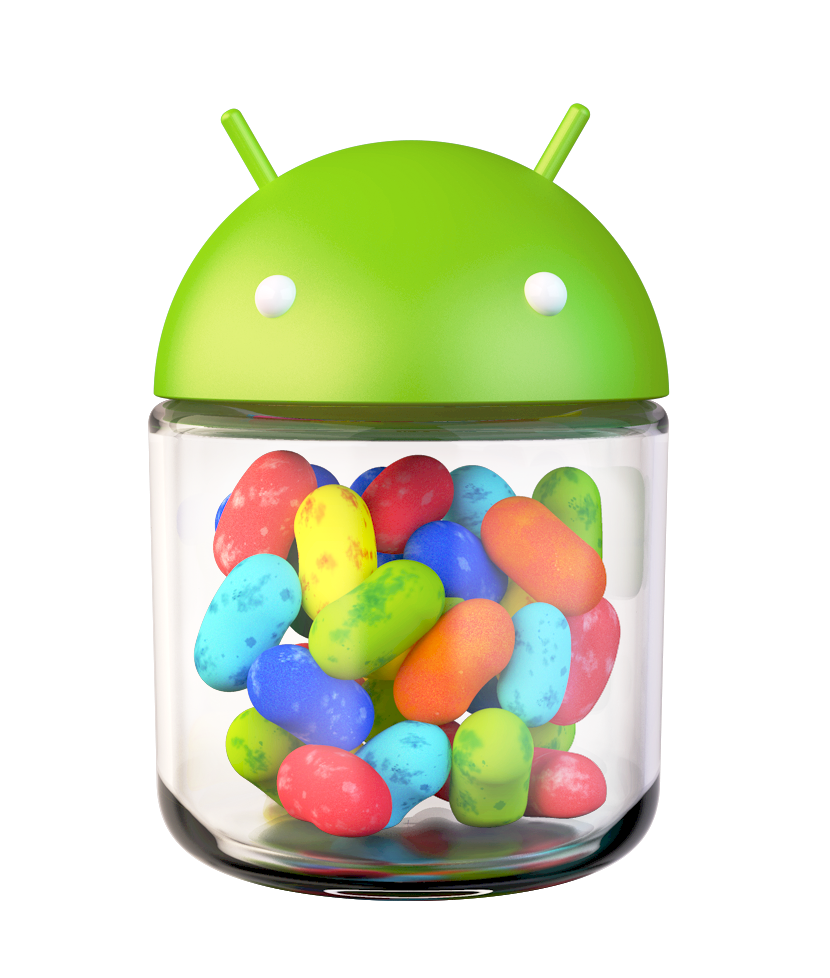
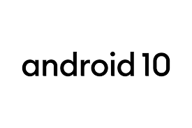
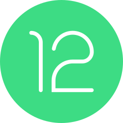

⭐
2009
Android Eclair (oct. 2009) Nivel de API 5
- En esta versión las cosas cambiaron y no se limita a ser una simple actualización.
- La velocidad de hardware se optimiza.
- Soporta pantallas de mayor tamaño y resolución.
- Cambia la interfaz de usuario.
- El navegador soporta HTML5.
- Soporta Microsoft Exchange.
- Soporte integrado de flash para la cámara.
- MotionEvent mejorado para eventos multi-touch.
⭐

2010
Android Froyo (mayo 2010) Nivel de API 8
⭐

2010
Android Gingerbread (dic 2010) Nivel de API 9
- Mejoras en la IU para ofrecer simplicidad y velocidad.
- Entrada de texto más intuitiva y rápida.
- Selección de palabras y copiado y pegado con un solo toque.
- Administración de energía mejorada.
- Control sobre las aplicaciones
- Nuevas formas de comunicarse y organizar
- Llamadas por internet.
⭐

2011
Android Honeycomb (feb. 2011) Nivel de API 11
- Interfaz de Usuario.
- Multitarea y Navegación.
- Widgets y Pantalla de Inicio.
- Navegador Web.
- Aplicaciones Optimizadas.
- Rendimiento y Hardware.
- Actualizaciones (MR1/3.1 y 3.2).
⭐

2011
Android Ice Cream Sándwich (oct. 2011) Nivel de API 14
- Interfaz de Usuario (Holo).
- Gestión de Widgets y Aplicaciones.
- Navegador Web.
- Desbloqueo Facial (Face Unlock).
- Multimedia y Cámara.
- Funcionalidades Técnicas.
⭐

2012
Android Jelly Bean (julio 2012) Nivel de API 16
- Los gráficos han aumentado.
- La búsqueda de por Google Ahora, o Google Now como se lo conoce en inglés, es más interactiva.
- Google Now trae incorporado un sistema de reconocimiento de voz completo.
- Respuestas más completas.
- Intenta adelantar esa palabra que se está por escribir.
⭐

2013
Android KitKat (oct. 2013) Nivel de API 19
- Funciona en dispositivos con pocos recursos.
- Apariencia más pulida, con barras de estado y navegación translúcidas, y una barra de aplicaciones más clara.
- Oculta las barras de estado jugos, lectura o pantalla completa.
- Mejora de voz del asistente de Google Now
- Introdujo la emulación de tarjeta de host (HCE) para NFC.
- El diseño general se hizo más claro.
⭐

2014
Android Lollipop (nov. 2014) Nivel de API 21
⭐
2015
Android Marshmallow (mayo 2015) Nivel de API 23
⭐

2016
Android Nougat (agosto 2016)Nivel de API 24
- Mejora la duración de batería y reducir el uso de RAM.
- Prolonga la duración de la batería aplazando actividades de CPU y red.
- Hay optimizaciones en segundo plano.
- Para mejorar la seguridad de los archivos privados, el directorio privado de las apps orientadas a Android 7.0 o versiones posteriores tiene acceso restringido.
- Permite a los usuarios configurar el Tamaño de visualización.
⭐

2017
Android Oreo (agosto 2017) Nivel de API 26
- Permite ver vídeos en una ventana flotante mientras se usa otra aplicación.
- Ofrece un control más fino sobre las notificaciones.
- Limita el uso de aplicaciones en segundo plano para mejorar la autonomía.
- Diseño unificado con dos capas (icono y fondo) que se adaptan al estilo del lanzador.
- Cambio de diseño de "gota" a una estética más realista y plana, más similar a iOS.
- Arquitectura que acelera las actualizaciones al separar el sistema operativo de los drivers del fabricante.
- Sistema nativo para rellenar automáticamente datos como usuario y contraseña.
⭐

2018
Android Pie (agosto 2018) Nivel de API 28
- La batería de tu celular podrá identificar patrones de uso para priorizar la energía sólo en las aplicaciones y servicios que te interesan.
- App Actions, que le permitirá a tu teléfono predecir lo que estás a punto de hacer para mostrarte varias opciones disponibles.
- Android Pie facilita la selección inteligente de texto que reconoce el significado del texto que está escribiendo y sugiere acciones relevantes.
- App Timer podrás establecer límites de tiempo que te avisarán cuando estés por cumplirlo y al llegar el momento, te sacará de la aplicación.
⭐

2019
Android 10 (sept. 2019) Nivel de API 29
- Privacidad y Seguridad: Mayor control sobre el acceso a la ubicación y datos personales (permisos de aplicaciones).
- Intefaz de usuario: Introducción del tema oscuro del sistema y la navegación por gestos totalmente renovada, reemplazando los botones tradicionales.
- Funciones Nuevas: Incorporación de Live Caption (subtítulos automáticos), Focus Mode (modo concentración) y Bubbles (burbujas de notificaciones).
- Rendimiento: Mejoras en la velocidad de apertura de aplicaciones y la gestión de batería (optimización de ART).
- Conectividad: Soporte nativo para 5G y el estándar Wi-Fi 6.
⭐
2020
Android 11 (sept. 2020) Nivel de API 30
- Gestión de Conversaciones: Las notificaciones de mensajería se agrupan en un espacio dedicado, permitiendo priorizar conversaciones y usar burbujas flotantes para chats.
- Privacidad y Seguridad: Implementa "permisos de un solo uso" para micrófono, cámara y ubicación, además del restablecimiento automático de permisos si no se usa una aplicación.
- Controles de Dispositivos: Menú de apagado rediseñado para controlar dispositivos domésticos inteligentes (IoT) y mejor gestión de contenido multimedia.
- Grabación de Pantalla: Herramienta nativa que permite grabar audio del sistema, micrófono o ambos.
- Funciones Adicionales: Compatibilidad nativa con 5G, mejoras en el soporte para pantallas plegables, acceso rápido a billetera y mayor soporte para Android Auto inalámbrico.
⭐

2021
Android 12 (oct. 2021) Nivel de API 31
- Material You: Interfaz dinámica que adapta los colores del sistema (notificaciones, ajustes, widgets) a la paleta del fondo de pantalla elegido.
- Privacidad Reforzada: Incluye un "Panel de privacidad" para ver qué apps acceden a cámara, micrófono o ubicación, además de indicadores de uso en la barra de estado.
- Nuevo Panel de Ajustes Rápidos: Más grande, con accesos directos para apagar la cámara/micrófono y controles multimedia integrados.
- Rendimiento: Mayor rapidez y eficiencia, con un uso reducido de los núcleos de alto rendimiento del sistema.
- Funciones Nuevas: Modo a una mano, capturas de pantalla con desplazamiento, uso compartido de WiFi mediante código QR o Nearby, y atenuación extra del brillo.
⭐
2022
Android 13 (agosto 2022) Nivel de API 33
- Material You Mejorado: Mayor personalización de la interfaz, permitiendo que los iconos de aplicaciones coincidan con el color del fondo de pantalla.
- Seguridad y Privacidad: Nuevos permisos para el acceso a archivos, fotos y videos.
- Idiomas por Aplicación: Los usuarios pueden configurar un idioma diferente para cada aplicación.
- Optimización en Tablets y Plegables: Nueva barra de tareas para facilitar la multitarea y pantalla dividida.
- Audio Espacial y Bluetooth LE: Soporte para audio espacial y el estándar de audio Bluetooth Low Energy (LE) para menor latencia y mejor calidad.
⭐
2023
Android 14 (oct. 2023) Nivel de API 34
- Seguridad y Privacidad: PIN de 6 dígitos recomendado por defecto, protección avanzada de memoria.
- Multimedia y Rendimiento: Soporte para imágenes Ultra HDR, mejor calidad de audio USB sin pérdidas y optimizaciones en la gestión de la batería.
⭐
2024
Android 15 (oct. 2024) Nivel de API 35
⭐

2025